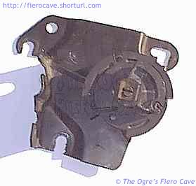

Go Home
Site Map
Go Home
Site Map
Streeeaaatch
Looking for cheap Performance?
Make sure the gas pedal in your Fiero is opening the throttle all the way. If you aren't reaching WOT (Wide Open Throttle), you've got issues. Everyone needs to check the throttle cable out.... I expect all OE Fiero engines have various problems with this, not just the DIS L4. (Though the DIS L4 may be the easiest to fix.) Many conversions may also have problems.
This problem could be a major factor in people thinking any given engine is weak. No engine will deliver it's full power if it cannot reach WOT. It's even worse with an engine that is rated under 100HP to start.
My car has been like a whole different car since fixing the cable setup so I can adjust it. Amazing what more throttle will do for an engine. In my case it was 20-25% more. Your results may vary depending what engine and transmission you've got. (Automatics load the accelerator cable more due to their TV cable.) Even a brand new throttle cable will have considerable stretch on these cars. If you don't compensate for it you will not reach WOT and you Will Not get full performance from the engine! All engines, OE or swaps, need this checked.
Someone commented that the cables stink....
Actually it's not a problem of the quality of the Fiero throttle cable as much as length... The cables are constructed using the same stuff as almost any other used by all of the carmakers, not just GM. Accelerator cables generally outlast the cars they are in.
The bigger problem is that they apparently forgot something about longer cable/rope... If you make a cable longer, you need to make it stronger to support the same load without major stretching. These cables are at least twice and up to 3-4 times the length of almost every other throttle cable I've ever seen in a car. These Fiero cables are all about 6-8 feet long depending on which motor. I think the V6 is a little shorter than the L4 one. In mine I get a rough measurement of about 8 feet. That means allot more stretch over the length of even a new cable in Fiero vs. the 2-3 foot jobs in many other cars.
Is it all just the cable?
No. There are other items to look at for this problem. One is the plastic and metal assembly that the gas pedal pivots in. The plastic block in there can suffer a large amount of wear and that will add to any problems with the cable. I don't know how to fix this problem yet.
Note
You should check for this periodically on most vehicles. Stuff will normally stretch and wear over time. All vehicles are susceptible to such problems, some more than others.
The testing
The basic test is quick and easy... watch the throttle plate while someone holds the pedal to the floor. Don't mash it. Just hold it. If the throttle isn't straight open in the bore then you've got problems.
I used my ECM scanner to see exactly what the TBI was telling the ECM. And yes, WOT to the TBI and ECM is a vertical throttle butterfly on my 87 L4.
What I found
My 87SC with its bone stock setup was only opening the 700 TBI unit to about 75%. 80% if I really mash the pedal hard. (Not good for it I'm sure)
There is considerable play at the gas pedal. After further examination, I found quite a bit of wear in the plastic block that the pedal pivots in. I don't know what to do about that yet.
There is enough slack to pull back a good 1/2 to 3/4 inch of cable at the idler pulley. Some of it could be cable stretch or wear. Some could just be the cable is a hair too long. Some could even be intentional to prevent over revving it.
There is no easy way to adjust for it. I'd be leery of doing anything on the wire that could damage it or make it jump the pulley. Last thing you want is the gas pedal going dead at the end of an on ramp...
Fix... (87+ L4 Only!)
Don't use this method. This does fix TBI but mess with auto trans. I will leave this for reference value.
WARNING! Altering the idler plate or throttle cable in any way will require adjustment of the TV cable to the automatic transmission. Failure to adjust the TV cable correctly can cause serious damage to your transmission.
To fix mine I slotted all the holes in the idle plate. I notched two and cut the third about a 1/4-inch as shown below. The hole in the upper right will end up sort of L shaped. Slot the two round holes the full width of the hole. (It's hard to see in this image. I did not cut the slot by the pulley open like I did the two round holes.)
When mounted the bolts end up centered in the cuts. This should provide more than enough adjustment to reach WOT, especially on a manual transmission car. (You don't want the bolt threads past the edge of the plate or they may not hold well. You wouldn't want the plate to work loose and suddenly lip.)
The Automatic will reach WOT but the TV cable's extra load puts some additional stretch on the main throttle cable. W/o the TV connected I can now easily make WOT.
With the TV reconnected and readjusted, yes readjustment was required, I can now get the throttle to 96% as indicated by my scan tool. This is just after initial modification while sitting stopped... Remember that I could only get to 75% before... This is a big jump, over 20% more throttle.
As a temporary test, I slid the end of a nylon wire tie into the pedal pivot on the steering column side and behind the pedal rod. (between the plastic and rod.) With the slop in the pivot taken up, I can reach full WOT. I'm not going to drive like that but it does say that the wear in the pivot is a significant factor. When I have a good fix I'll add it.
Notes
One thing I did notice right away... The Duke spools up allot faster when it can reach WOT vs. 75% throttle... You can quickly red line it, especially in lower gears. You'll need to watch out for this or you could fry the motor real quick in manual transmission cars.

The idler pulley is bloody hard to turn by hand to make the TV cable adjustment. If you look at the idler pulley you'll see three holes in it. GM used a tool to rotate the pulley using the three holes.
You can make a tool to fit two of the holes or you can go to a bicycle shop and see about getting a special wrench, shown left PN SPA-2, that is used for working on the gear packs of 10 speed and mountain bikes. The ends of the bike tool fit the idler perfectly.
The cables are easier to remove if you do it as follows. If present, take the Cruise cable off its pulley. Pull some slack and lift the throttle cable out of the idler, after that you'll have more slack to get it out of the TBI pulley. Then drop the TV cable off the idler.
Little tabs hold the cables into the slots on the bracket. Carefully lift the tab then slide the cable out of the slot.
While it was off... I took the idle pulley apart and cleaned it all... if you lube it use something like Dry Teflon. DON'T use oil-based stuff or anything else that will stay wet. I noticed some rust at the base of the pivot, so I cleaned it off and put a very thin aluminum washer on the stem to give the pulley a smooth surface where is rubs the plate. (The washer has to be thin or you'll bind up the pulley.)
Don't spray the idler assembly with oil! Oil/Grease will draw dirt into the pulley shaft and accelerate wear.
Fix (All Others.)
I don't know what you have to do to fix this on the Distributor L4 or the V6. Sorry.
The best way to take up the slack in the throttle cable is to shorten it on the pedal end. I know that is a major pain but it is the most reliable way, especially if you have an automatic transmission. You should still check the TV cable on automatic transmissions to make sure they are set correctly.
Some people have speculated about using lead sinkers that pinch onto the wire. Don't dot that! The lead is too soft and will come off. It could come off very suddenly and make you have an accident. I don't know what is the best way to shorten the cable but that isn't one of them. Whatever you do, you have to make sure your adjustment can't slip.